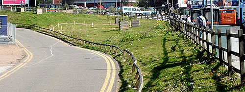
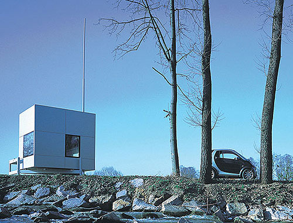

By golly it’s nearly June which means the Festival of Xtreme Building is about to start in Birmingham.
Running from June through to September this is an “experiment in design and experimental structures where Birmingham’s citizens, private sector developers and Local Authorities can create structures and explore architectural ideas that will reflect their visions of what gives a city its unique magic.”
I confess to being a bit dazzled by some of the terminology but it boils down to some interesting things being built on the patch of grass on the corner of Moor St and Priory St.

The first building on the site is T House which might look like this:

Or it might not. It opens on May 23rd with the official opening at 4.00pm. Here’s the barely legible invite which is dong the email rounds.
Part-architecture, part-sculpture, the design for T-House is a deconstruction of the built form – in this case, of the Japanese tea house and the English garden pavilion. T-House unfolds a series of environments through its intersecting planes, opening out dynamically like a giant piece of origami, which can be put to a wider range of different uses. T-House is intended for location in a modern public park where it is hoped it would act as both container and shelter for a wide range of social, aesthetic and artistic interactions to be determined by the general public. T-House is a developing concept which during the festival will be put to further research undertaken with different groups of people from Eastside.
There’s a lot more going on over the months but what really caught my eye was the promise of the Micro Compact Home arriving on June 2nd. This 2.6 sq metre cube apparently has all the space and facilities for humans to live in and is completely recyclable. There’s much more on the Micro Compact website about the design process and a quick Google brings up a number of articles (though oddly nothing on BLDGBLOG). It looks like this:

I think this festival is going to be one that’s best (perhaps only) understood by experiencing it. While some aspects might be a bit high level (though it’s worth noting they’re making interaction with Birmingham’s residents a priority) the city has always had a relationship with architecture, from the initial rapid growth of the industrial revolution through the post-war Brutalist years and continuing into today’s regeneration. Yet most of us know so very little about architecture. Buildings just appear like magic and we judge them in retrospect. If this festival can help us understand the process a bit better that can only be a good thing. We shall see.
Xtreeme, to the Max etc | Birmingham: It's Not Shit
[…] Created in Birmingham has news of a confusing, but ace sounding Festival of Xtreme Building that starts at the end of May and runs till September. They’re gonna build some odd stuff up by Moor St. […]
The Festival of Xtreme Building « EC Arts
[…] Created in Bham: FXB countdown… Filed under: Press | Posted by : EC-Arts Leave a Comment […]